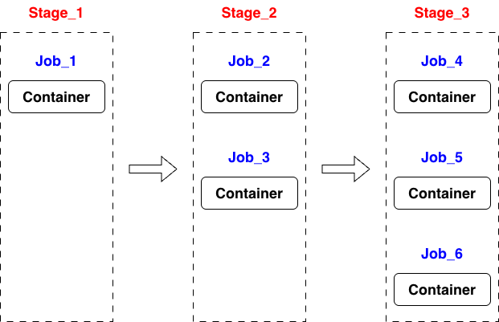
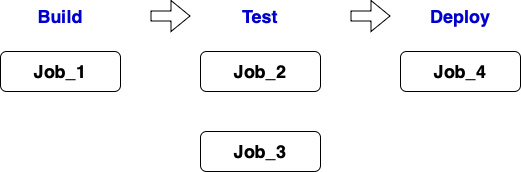
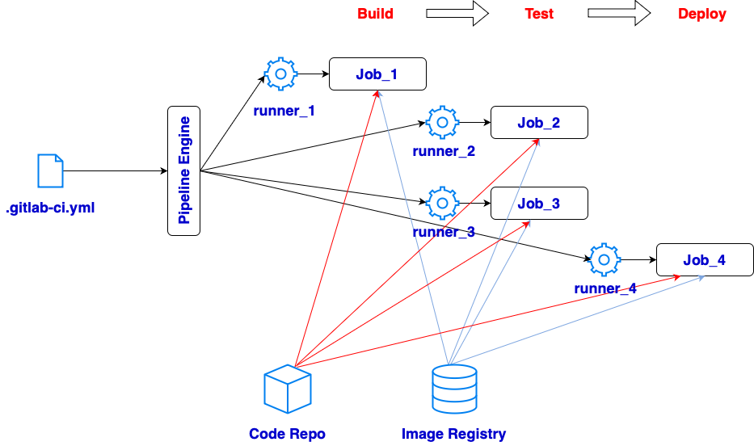
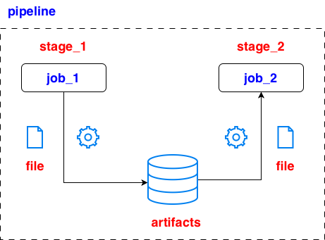
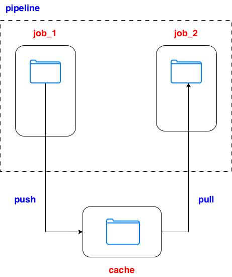
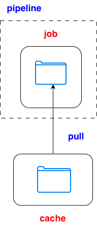

# .gitlab-ci.yml
default:
image: alpine:latest
stages:
- stage_1
- stage_2
- stage_3
job_1:
stage: stage_1
script:
- echo "Running job_1 in stage_1"
job_2:
stage: stage_2
script:
- echo "Running job_2 in stage_2"
job_3:
stage: stage_2
script:
- echo "Running job_3 in stage_2"
job_4:
stage: stage_3
script:
- echo "Running job_4 in stage_3"
job_5:
stage: stage_3
script:
- echo "Running job_5 in stage_3"
job_6:
stage: stage_3
script:
- echo "Running job_6 in stage_3"

# .gitlab-ci.yml
image: alpine:latest # define a default image for jobs
stages: # define stages and order
- build
- test
- deploy
job_1:
stage: build
tags:
- saas-linux-small-amd64 # select runner with specific tag to run the job
script:
- echo "Hello, $GITLAB_USER_LOGIN!" > output_1.txt # generate output file
artifacts:
paths:
- output_1.txt # define the output file path
job_2:
stage: test
tags:
- gitlab-org-docker
script:
- mkdir results # create a output folder
- echo "Test in job 2" > results/output_2.txt
artifacts:
paths:
- results # define output folder path which is relative to the project directory
expire_in: 1 day # setup expiration days
job_3:
stage: test
script:
- echo "Test in job 3"
- sleep 20
needs:
- job_1 # implement job_3 when job_1 finish
job_4:
stage: deploy
script:
- echo "Deploy job"


default:
image: alpine:latest
stages:
- stage_build
- stage_test
job_create_file:
stage: stage_build
script:
- echo "Hello from create_file job" > output.txt
artifacts:
paths:
- output.txt
job_use_file:
stage: stage_test
dependencies:
- job_create_file
script:
- cat output.txt > output2.txt
artifacts:
paths:
- output2.txt

stages:
- build
- test
create_file:
stage: build
script:
- mkdir -p shared
- echo "Hello to a cache!" > shared/message.txt
cache:
key: shared-cache
paths:
- shared
policy: push
use_file:
stage: test
cache:
key: shared-cache
paths:
- shared
policy: pull
script:
- echo "Job in the same pipeline reads file from cache:"
- cat shared/message.txt

stages:
- restore
restore_cached_file:
stage: restore
cache:
key: shared-cache
paths:
- shared
policy: pull
script:
- echo "Checking cache from previous pipeline..."
- |
if [ -f shared/message.txt ]; then
echo "Found cached file:"
cat shared/message.txt
else
echo "No cached file found. This may be the first pipeline."
fi